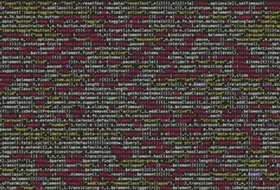

Think Outside Of The Box
Thinking outside the box (also thinking out of the box or thinking beyond the box and, especially in Australia, thinking outside the square is a metaphor that means to think differently, unconventionally, or from a new perspective. This phrase often refers to novel or creative thinking. The term is thought to derive from management consultants in the 1970s and 1980s challenging their clients to solve the "nine dots" puzzle, whose solution requires some lateral thinking. This phrase can also be found commonly in dance, as encouragement to move creatively, beyond simple, geometric box steps and their basic variations, to literally step outside the box into more complex patterns of expression. The catchphrase, or cliché, has become widely used in business environments, especially by management consultants and executive coaches, and has been referenced in a number of advertising slogans. To think outside the box is to look further and to try not thinking of the obvious things, but to try thinking of the things beyond them. See more...
Computer Hacking
modifying or altering computer software and hardware to accomplish a goal that is considered to be outside of the creator’s original objective. Those individuals who engage in computer hacking activities are typically referred to as “hackers.”
The majority of hackers possess an advanced understanding of computer technology. The typical computer hacker will possess an expert level in a particular computer program and will have advanced abilities in regards to computer programming.
Unlike the majority of computer crimes which are regarded as clear cut in terms of legality issues, computer hacking is somewhat ambiguous and difficult to define. In all forms, however, computer hacking will involve some degree of infringement on the privacy of others or the damaging of a computer-based property such as web pages, software, or files. As a result of this loaded definition, the impact of computer hacking will vary from a simple invasive procedure to an illegal extraction of confidential or personal information.
The New Hacker’s Dictionary, a resource used to elucidate upon the art of computer hacking, has defined the practice through an assortment of definitions: A hacker may be defined as any person who enjoys exploring the intricacies of programmable systems and how to stretch their capabilities. This definition is held in contrast to a generic computer user, who prefers to access a computer’s minimal functions; One who programs or who enjoys programming, as opposed to those individuals who simply theorize about programming;
Tunnel
A tunnel is an underground passage. Some tunnels are used for cars, and others are used for trains. Sometimes, a tunnel is used for movement of ships. Some tunnels are built for communication cables and some are built for electricity cables. Other tunnels are built for animals. Tunnels are dug in different kinds of grounds, from soft sand to hard rock. The way of digging is chosen by the type of ground. There are two additional ways of digging : quarry and 'cut and cover'. In quarry, the tunnel path is drilled in a horizontal way. This system requires a deep tunnel that's built in a firm rock. In the 'cut and cover' system, a tunnel is dug in the ground and, afterwards, a roof is built above the tunnel. This system fits tunnels that are close to the ground like road tunnels and infrastructure. Building tunnels is a large civil engineering project that could cost very high sums of money. The planning and building of a long tunnel may take many years. The Channel Tunnel between France and England is one of the longest tunnels in the world. It is 50 kilometers long. The longest tunnel in the world, the Gotthard Base Tunnel, is being dug in Switzerland.